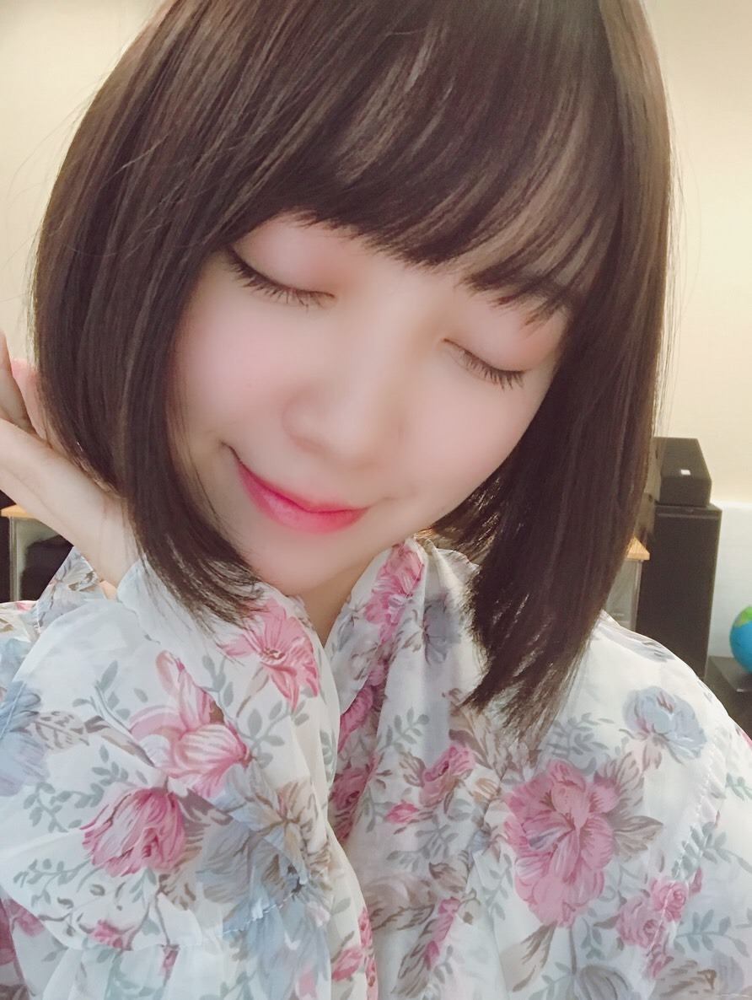
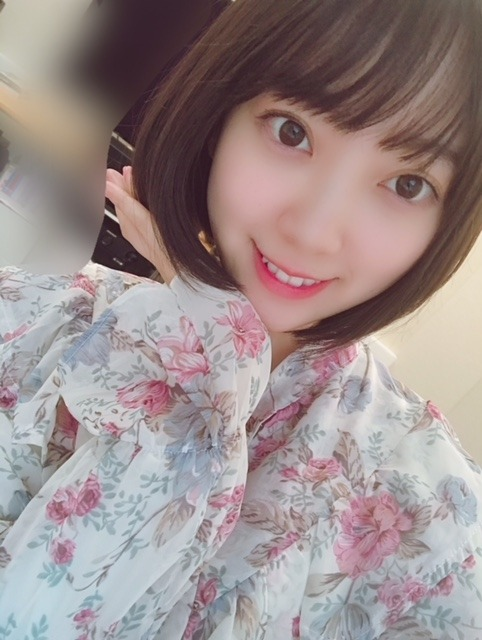
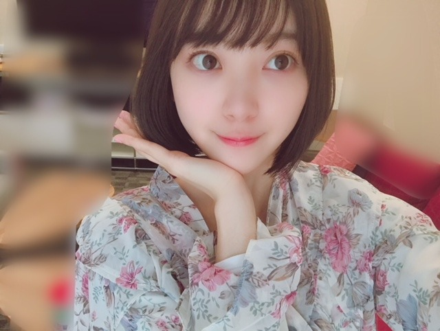
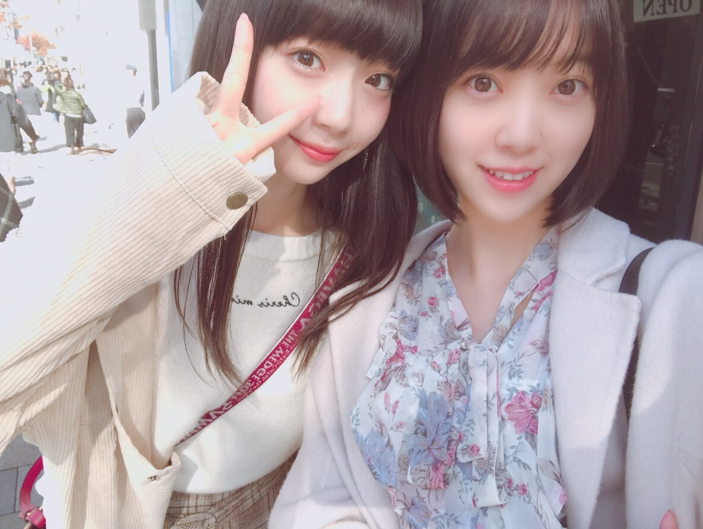
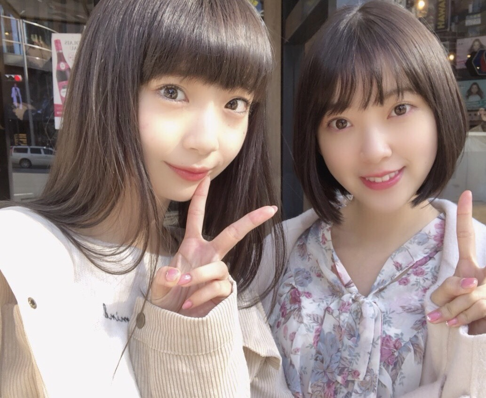

2018/1117Sat初。
22年間生まれて初めて髪を染めました！
色は、ダークグレージュです☺︎
光に当たると透明感がでて、
暗めの色だから自然だし私は新しい自分に
出会えてドキドキわくわくしています



このポーズは髪を主張したいが為の
謎ポーズ。笑
実はNGT48の荻野由佳氏も
染めたことがなくて
同じタイミングで染めたいねって話していて
2人で行ってきました！
色もお揃いなので
#ゆかみおカラー
と呼んでます笑


るんるん♪
どうでしょうか...？
いろんな私を受け入れ
楽しみながら応援してくださったら
嬉しいです...☺︎
私も皆さんをいつ何時もドキドキワクワク
楽しませられるよう日々頑張ります！
では
2018/11/17 14:30
コメント(549)
髪染めた未央奈ちゃんもかわいいー
似合ってるよ！
可愛い！
可愛い！
未央奈さんありがとう
未央奈！(*´꒳`*)！
わぁお！！！とうとう髪色変えたんだね！！(*´ω｀*)髪色少し明るくしただけで一気に綺麗なお姉さん感出てきたね！！凄く素敵だよ♬全然違和感ないよ〜似合ってる！！
何より未央奈が嬉しそうな顔してるのがたまらなく可愛いです！(*´-`)広角いつもよりめっちゃ上がってるよ笑
嬉しさみたいな気持ちがダダ漏れです笑
2人で行ってきたんだね♬ 私は乃木坂以外の人はあまりよく知らないのですが荻野さんは知ってます！未央奈と仲良しだからねw
2人ともなんか雰囲気似ているよね、本当の姉妹ですって初見で言われたら納得しちゃいそうです(*´ω｀*)
るんるん未央奈可愛いーよー
うん。凄く似合って可愛いよ！お姉さん感がだいぶアップした感じ！綺麗な大人の女性感って言う方伝わるかな？
心配しなくてもどんな未央奈も好きです♬
なので今回も新しい未央奈、楽しんでいるよ！わくわくです♬(*´ω｀*)
これからも応援してるから頑張れ！(*´꒳`*)
わぁお！！！とうとう髪色変えたんだね！！(*´ω｀*)髪色少し明るくしただけで一気に綺麗なお姉さん感出てきたね！！凄く素敵だよ♬全然違和感ないよ〜似合ってる！！
何より未央奈が嬉しそうな顔してるのがたまらなく可愛いです！(*´-`)広角いつもよりめっちゃ上がってるよ笑
嬉しさみたいな気持ちがダダ漏れです笑
2人で行ってきたんだね♬ 私は乃木坂以外の人はあまりよく知らないのですが荻野さんは知ってます！未央奈と仲良しだからねw
2人ともなんか雰囲気似ているよね、本当の姉妹ですって初見で言われたら納得しちゃいそうです(*´ω｀*)
るんるん未央奈可愛いーよー
うん。凄く似合って可愛いよ！お姉さん感がだいぶアップした感じ！綺麗な大人の女性感って言う方伝わるかな？
心配しなくてもどんな未央奈も好きです♬
なので今回も新しい未央奈、楽しんでいるよ！わくわくです♬(*´ω｀*)
これからも応援してるから頑張れ！(*´꒳`*)
未央奈ちゃんブログ更新ありがとう！！
ダークグレージュならぬゆかみおカラーとても似合ってます！！
個人的にすごく好きです！w
お仕事大変だと思いますが頑張ってください！
大好きです！！
応援してます！！！
ダークグレージュならぬゆかみおカラーとても似合ってます！！
個人的にすごく好きです！w
お仕事大変だと思いますが頑張ってください！
大好きです！！
応援してます！！！
むちゃむちゃ似合ってる
みおなちゃんブログ更新ありがとう♪♪
黒が好きだったけど、自然に黒っぽいね(笑)
みおなちゃん大好きだから大丈夫(笑)
俺もみおなちゃんの応援頑張ります！
黒が好きだったけど、自然に黒っぽいね(笑)
みおなちゃん大好きだから大丈夫(笑)
俺もみおなちゃんの応援頑張ります！
可愛いです❤️
シブヤノオトが初お披露目でしょうか？
堀ちゃんの中身が変わるわけではないですしね。
ドキドキです。
シブヤノオトが初お披露目でしょうか？
堀ちゃんの中身が変わるわけではないですしね。
ドキドキです。
黒髪じゃなきゃ嫌だ嫌だ星人だったのですが、これは…ありだね！かわいい！暗めの色なのがいいのかも。
新しい堀ちゃんこんにちわ！
オテンキのりさんは染めたこと気付いてくれるんでしょうか。笑
新しい堀ちゃんこんにちわ！
オテンキのりさんは染めたこと気付いてくれるんでしょうか。笑
喜んで受け入れさせていただきます。
初コメントです！
今までの黒髪から一新、新たな魅力を感じました！
おぎゆかとのお揃いもいいね！
今までの黒髪から一新、新たな魅力を感じました！
おぎゆかとのお揃いもいいね！
会いたいよ...
すき
すき
ばり可愛いです！
ちなみに髪色お揃いなのうれぴこです^ ^
ちなみに髪色お揃いなのうれぴこです^ ^
ついに染めたのね〜
めっちゃ似合ってる！！
めっちゃ似合ってる！！
素敵(o^^o)
*ଘ(੭*ˊᵕˋ)੭* ੈ✩‧₊みおなさんブログ更新おおきに♪
やっぱり今日も超絶可愛いですね♪
きゃぁぁぁあああ‼︎‼︎‼︎‼︎
超絶キャワエエですニャー♪٩( 'ω' )وぱねぇ♪
僕個人的に、髪明るいのが
好きなのでとてもエエですニャー♪٩( 'ω' )و
勿論黒髪のみおなさんも素敵ニャー♪
キャワエエ写真
いっぱいあっざ〜す♪٩( 'ω' )و
これからも色々楽しみに応援しています♪
身体に気をつけて下さいね♪
やっぱり今日も超絶可愛いですね♪
きゃぁぁぁあああ‼︎‼︎‼︎‼︎
超絶キャワエエですニャー♪٩( 'ω' )وぱねぇ♪
僕個人的に、髪明るいのが
好きなのでとてもエエですニャー♪٩( 'ω' )و
勿論黒髪のみおなさんも素敵ニャー♪
キャワエエ写真
いっぱいあっざ〜す♪٩( 'ω' )و
これからも色々楽しみに応援しています♪
身体に気をつけて下さいね♪
最高シャーン
更新ありがとう〜
ダークグレージュ似合いますね、髪染めたことなかったんですね以外です！笑笑
いつも髪切ったりするといつもこのポーズしてますね♪
今日はこれでばいばい (。'(ェ)'。)ノ~~~
コメ読みお疲れ様で〜す★
またね〜
ダークグレージュ似合いますね、髪染めたことなかったんですね以外です！笑笑
いつも髪切ったりするといつもこのポーズしてますね♪
今日はこれでばいばい (。'(ェ)'。)ノ~~~
コメ読みお疲れ様で〜す★
またね〜
控えめに言って超かわいい！
髪色ほりさんに本当によく似合っていて素敵です！！
すんごい可愛いです！！！！！
すんごい可愛いです！！！！！
染める前も可愛さ100%だったけど、
ゆかみおカラーで可愛さ三割増し笑
無敵やん！
ゆかみおカラーで可愛さ三割増し笑
無敵やん！
新しい髪の色似合っててかわいいよ！
握手会今度初めて行くけどますます楽しみだわー
最近乃木坂のテレビ出演多くて堀ちゃんのことテレビで見る機会が多いから嬉しいな！
忙しいの思うけど体調に気をつけて頑張ってね！
握手会今度初めて行くけどますます楽しみだわー
最近乃木坂のテレビ出演多くて堀ちゃんのことテレビで見る機会が多いから嬉しいな！
忙しいの思うけど体調に気をつけて頑張ってね！
まって、めちゃめちゃ可愛すぎるんだけど！
控えめに言って好き!!
似合う
雰囲気が変わっていいね！
俺も初めて染めるならその色にしようと思ってた
嬉しい
嬉しい
未央奈！
タイトルが「初」やから、「はつみちゃん」の話かと最初思いました笑
髪の毛染めたんですね！
暗い色に染めたら、確かに部屋とかで生活する分にはあんまり変化は感じないけど、太陽の光とか浴びたら明るく見えるよね。
今の俺もそんな感じやから良くわかります。
俺の場合はブリーチした髪に黒染めしてるんで、未央奈とはちょっと違うけどね笑
一ヶ月後の握手会で見られるかな？
楽しみにしておきます！
テレビで見るときも髪に注目してみます！笑
タイトルが「初」やから、「はつみちゃん」の話かと最初思いました笑
髪の毛染めたんですね！
暗い色に染めたら、確かに部屋とかで生活する分にはあんまり変化は感じないけど、太陽の光とか浴びたら明るく見えるよね。
今の俺もそんな感じやから良くわかります。
俺の場合はブリーチした髪に黒染めしてるんで、未央奈とはちょっと違うけどね笑
一ヶ月後の握手会で見られるかな？
楽しみにしておきます！
テレビで見るときも髪に注目してみます！笑
かわいい！
似合ってる！
似合ってる！
ブログ更新ありがとう
未央奈凄く似合ってるよ(^-^)
これからも応援してます
未央奈凄く似合ってるよ(^-^)
これからも応援してます
新しい髪色素敵です
今までの黒も良かったけど、
ゆかみおカラーは大人っぽさが増しますね
おぎゆかさんとは本当に仲良しですね
おぎゆかさんのSNSにも時々2人の写真上がるのですごく嬉しいです
今までの黒も良かったけど、
ゆかみおカラーは大人っぽさが増しますね
おぎゆかさんとは本当に仲良しですね
おぎゆかさんのSNSにも時々2人の写真上がるのですごく嬉しいです
ブログ更新ありがとー！
髪染めた未央奈さんも素敵ですね！可愛いです！
握手会ではやくみてみたい！
髪染めた未央奈さんも素敵ですね！可愛いです！
握手会ではやくみてみたい！
似合いすぎやろー可愛い
みおちゃん髪染めたの？！しかも私とおんなじ色やん！！！いやー嬉しいなぁ笑笑 可愛すぎるよほんとに！！！あーだめだ好きが爆発してしまう笑笑 大好きです！！
ももんが
ももんが
みおな
うん。
自然でいいんじゃない？
いきなり派手な色だと浮いちゃうもんね。
うん。
自然でいいんじゃない？
いきなり派手な色だと浮いちゃうもんね。
お疲れ様です。
いや、未央奈さん......すごく似合ってます！！
ボブ未央奈に似合う髪色ですね。
色々な未央奈にこれからも出会いたいです！
いや、未央奈さん......すごく似合ってます！！
ボブ未央奈に似合う髪色ですね。
色々な未央奈にこれからも出会いたいです！
ブログ更新ありがとう！
めちゃめちゃ似合ってる！
めちゃめちゃ似合ってる！
未央奈ちゃんブログ更新ありがとう( ＾ω＾ )。髪の毛染めたの似合ってるよ。忙しいと思うけど身体に気をつけて頑張ってね。
ダークグレージュ、僕にとって、その色彩名
を聞いたのが初。
なかなか髪を染める勇気がなかったみたいだ
けど、誰かを誘っていけば大丈夫。そういう
女の子らしいところ、昔の乃木どこで、
ひめたんが一人で化粧室へ行くのを嫌がって
メンバーを誘っているのを思い出しました。
みおなちゃんのダークグレージュの髪は？
さらりさらり。
お似合いです。
ＰＶ観たよ。
万華鏡のような曼荼羅のような映像美。
その一部にみおなちゃんがしっかりはまって
た。
いわゆる西洋的な綺麗さじゃないけど、
日本的なしかも現代的な美しさでした。
まったく声が聴こえなくても、想いが伝わる
ようでした。
を聞いたのが初。
なかなか髪を染める勇気がなかったみたいだ
けど、誰かを誘っていけば大丈夫。そういう
女の子らしいところ、昔の乃木どこで、
ひめたんが一人で化粧室へ行くのを嫌がって
メンバーを誘っているのを思い出しました。
みおなちゃんのダークグレージュの髪は？
さらりさらり。
お似合いです。
ＰＶ観たよ。
万華鏡のような曼荼羅のような映像美。
その一部にみおなちゃんがしっかりはまって
た。
いわゆる西洋的な綺麗さじゃないけど、
日本的なしかも現代的な美しさでした。
まったく声が聴こえなくても、想いが伝わる
ようでした。
ありがとう（ございます）。
未央奈ブログ更新ありがとー！笑
未央奈ちょー可愛い！
未央奈大好き！
未央奈ちょー可愛い！
未央奈大好き！
いい色だね！
髪染めた(￣ー￣)・・・気分一新！♪ヽ(´▽｀)/おっちゃんは白髪混じりの！坊主頭(￣ー￣)
未央奈ちゃんブログ更新有難う！！
ダークグレージュかわいい〜〜！！！黒髪も好きだったけれどほんとに可愛い、、とっても似合ってます( ˶˙ᵕ˙˶ )
おぎゆかちゃんとお揃いなんだ！ステキ！おぎゆかちゃんのツイッターでも未央奈ちゃんとのツーショットみたよ！
仲良すぎか(･_･、)♡癒されます♡
#ゆかみおカラー 派手すぎずオシャレでよきよき
もちろんいろいろな未央奈ちゃんを受け入れます！応援しますー！大好きです
ダークグレージュかわいい〜〜！！！黒髪も好きだったけれどほんとに可愛い、、とっても似合ってます( ˶˙ᵕ˙˶ )
おぎゆかちゃんとお揃いなんだ！ステキ！おぎゆかちゃんのツイッターでも未央奈ちゃんとのツーショットみたよ！
仲良すぎか(･_･、)♡癒されます♡
#ゆかみおカラー 派手すぎずオシャレでよきよき
もちろんいろいろな未央奈ちゃんを受け入れます！応援しますー！大好きです
似合いすぎ
かわいい
かわいい
髪色いいね！
堀さん、とうとう髪を染めたんですね！
髪を染めた堀さんとても可愛いです！
新しい堀さんを見ることが出来てとても嬉しいです！！
髪を染めた堀さんとても可愛いです！
新しい堀さんを見ることが出来てとても嬉しいです！！
写真だとちょっとだけわかりづらいけど似合ってる！
のりさんがどんな反応するのか楽しみすぎる笑
のりさんがどんな反応するのか楽しみすぎる笑
未央奈ちゃん髪染めたの！？おぎゆかのインスタみてびっくりした！ふたりとも似合ってるし可愛い！私も初めて髪染めたときは違う自分に出会えた感じがして嬉しかったなあ…。これからも楽しませてください♩今日も未央奈ちゃんにとって良い日になりますように！


ますます女子力アップ